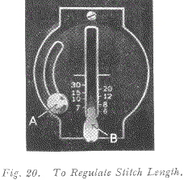

TO START SEWING
See Fig 19
Be sure to have thread take-up lever 5, Fig 10 in its highest position.
The throat plate has guide lines for seam width gauged from centre of needle hole, and cross lines for gauging square corners.
Place material beneath the presser foot G, turn the hand wheel to bring the point of the needle into the material, then lower the presser foot by means of presser bar lifter J, and start to sew.
Some materials, such as soft finished sheers, nylons, jerseys, tricots and other elastic and spongy textiles, require a slight amount of assistance in feeding during sewing operations.
However, too much pull will stretch the seam, create irregular stitching and bend the needle. Most materials require only guiding for best sewing results.
TO TURN A CORNER
Stop the machine when the needle eye, making its upward stroke, is still in the fabric. Raise the presser foot and turn the work as desired, using the needle as a pivot, then lowere the presser foot.
BASTING
The longest stitch, No. 6 on the stitch indicator, is satisfactory for basting and is easily removed by clipping every sixth stitch and withdrawing the long continuous thread.
Machine basting is firmer and more even than that done by hand in addition to being much quicker.
TO SEW BIAS SEAMS
Use a short stitch ans as light a tension as possible on the needle thread so that the thread is loose enough in the seam to allow the goods to stretch if necessary.
TO REMOVE THE WORK
Stop the machine with the thread take-up lever 5, Fig 10 at its highest point. Raise the presser foot by means of presser bar lifter J, Fig 19, draw the fabric back and to the left and sever the threads on the thread cutter F, Fig 19. Place ends of threads under presser foot.
TO REGULATE LENGTH OF STITCH AND DIRECTION OF FEED. See Fig 20
The machine can be adjusted to make from 6 to 30 stitches to the inch, as indicated by the numerals on the stitch indicator plate.
Loosen screw A and lower it to the bottom of the slot, then move lever B until its top edge is level with the figure denoting the number of stitches desired per inch.
Raise screw A as far as possible and tighten it. Thus set, the machine will make the indicated number of stitches in a forward direction.
If it is desired to reverse the direction of the stitching, raise lever B as far as possible, and the machine will make the same number of stitches in a backward direction.
TO REGULATE PRESSURE ON MATERIAL
For ordinary sewing, the pressure of the presser foot on the material seldom requires changing. Heavy materilas require more pressure than lightweight materials. The pressure should be only heavy enough to prevent the material from rising with the needle and to enable the feed to move the work along evenly.

To increase the pressure, turn the thumb screw W, Fig 21 clockwise or downward. To lighten the pressure, turn the thumb screw upward.
THREAD TENSIONS
For perfect stitching, the tension on the needle and bobbin threads must be heavy enough to pull the threads to the centre of the thickness of the material and make a firm stitch, as shown in Fig 22.
If the needle thread lies straight along the top side of the material, the tension on the needle thread is too heavy, or the tension on the bobbin thread is too light, as shown in Fig 23.
If the bobbin thread lies straight along the underside of the material, the tension on the needle thread is too light or the tension on the bobbin thread is too heavy, as shown in Fig 24.
TO REGULATE NEEDLE THREAD TENSION (See Fig 25)
The tension on the needle thread can be tested only when the presser foot is down.
The numerals "0" to "9" on dial B, indicate the different degrees of tension that can be obtained.
When the tension has been correctly set note the number at the indicator line C, so that this setting may be regained should the tension be altered for special work.
To increase tension, turn the thumb nut A gradually to the right (clockwise) until the required tension is obtained.
Each higher number denotes increased tension.
To decrease tension, turn the thumb nut A gradually to the left (counterclockwise) until the required tension is obtained. Each lower number denotes less tension.
the tension indicator C is marked with the signs + and -, which indicate the direction in which to turn the thumb nut A for more or less tension.
TO REGULATE BOBBIN THREAD TENSION
The tension on the bobbin thread is regulated by screw F, Fig 32, which is nearest the centre of the tension spring on the outside of the bobbin case. To increase the tension, turn screw F over to the right. To decrease the tension, turn this screw to the left.
When the tension on the bobbin thread has been once properly adjusted, it is seldom necessary to change it, as a correct stitch can usually be obtained by varying the tension on the needle thread.
DARNING (See Fig 26)
Raise needle to its highest point, turn machine back on its hinges, unscrew knurled screw A as afr as it will go, and move crank B down so that the screw A will enter the upper hole C.
The screw should then be securely tightened. The feed is now inactive and will not impede free movement of the work. Restore machine to its working position and raise the presser bar. Remove the presser foot and fit Spring Darning Foot No. 121094 but do not tighten the thumb screw.
Stretch tightly the article to be repaired in an embroidery hoop and place below the needle by tilting the edge of the hoop. Then lower the presser bar by means of its lifter, and adjust the height of the darning foot to allow just sufficient space for the free movement of the work in hand.
After adjustment, tighten the the thumb screw securely. Now move the hoop backward and forward by the hands until the hole or damaged part is completely covered with stitching in one direction. Then turn the work and stitch across to complete the darn.
After darning, reinsert and firmly tighten the screw A in the lower hole, and replace the presser foot for ordinary sewing.
EMBROIDERY
For surface embroidery, remove the presser foot to give a clear view of the stitching. For lace embroidery, i.e. open work, remove the ordinary presser foot and fit Spring Foot No. 121094. For embroidery the feed should be lowered and the work handled as advised in the preceding paragraph.